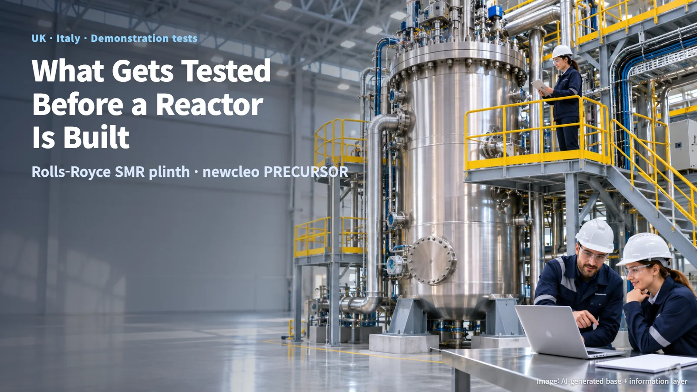
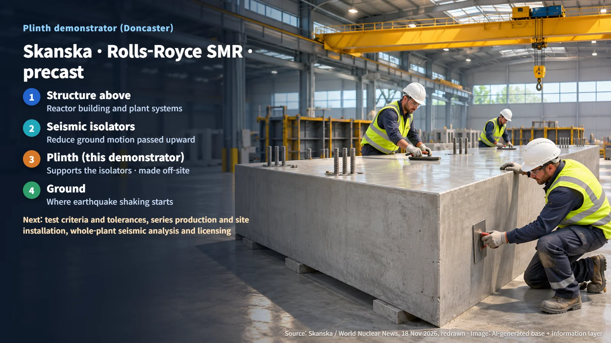
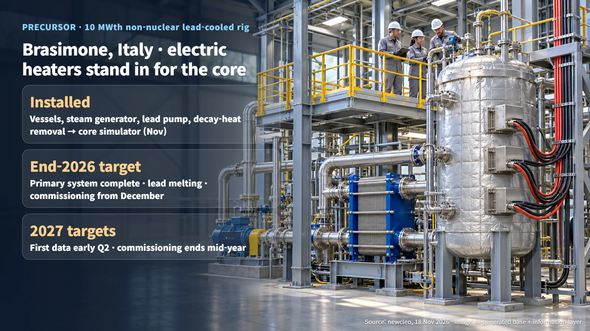
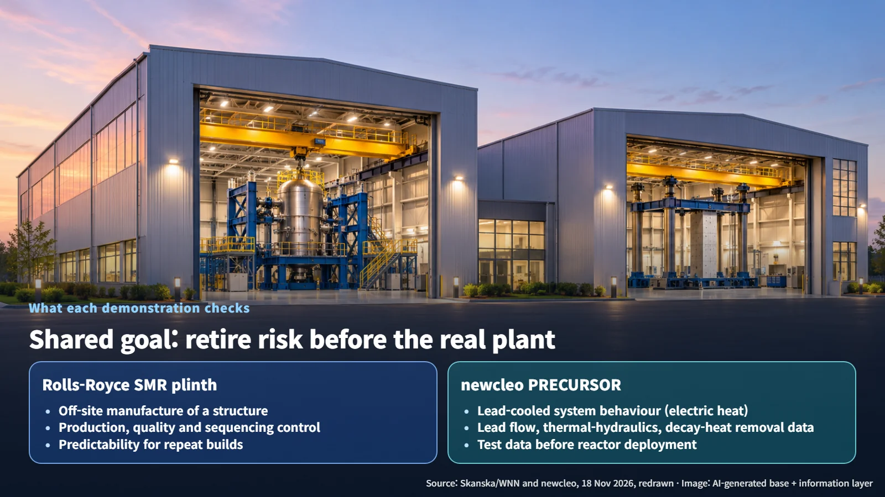

UK · Italy · Demonstration testing
Testing Before Building a Reactor: Rolls-Royce SMR's Seismic Isolation Plinth and newcleo's PRECURSOR Core Simulator
Skanska has completed a factory-made demonstrator of the seismic isolation plinth for Rolls-Royce SMR, and newcleo has installed an electrically heated core simulator in its 10 MWth PRECURSOR lead-cooled test facility.
When a reactor design is finished, it is natural to picture construction crews arriving soon after. Real projects, however, include a stage between the drawing board and the full-scale plant: build a piece first, run a system first, and learn from it. Problems found at this stage cost far less time and money to fix than problems found inside a finished reactor.
Two announcements on November 18 show this stage at work. In the United Kingdom, a manufacturing demonstration of a seismic isolation plinth for Rolls-Royce SMR has been completed. In Italy, newcleo has finished installing an electrically heated core simulator in its PRECURSOR test facility. Each one checks something different, and together they show how reactor developers reduce risk before deployment.

A Seismic Isolation Plinth Built in a Factory First: What Was Tested
Start with the idea of seismic isolation. An isolation system places devices between the ground and a building so that, when the ground shakes, less of that motion travels up into the structure. Think of standing on a bumpy bus with your knees slightly bent: your legs absorb much of the jolting, and your upper body stays steadier.
The plinth is the structure that supports those isolation devices. Construction company Skanska announced that it has completed the manufacture and testing of a demonstrator plinth for Rolls-Royce SMR, and World Nuclear News reported the news on November 18. The work took place at the Bentley Works facility in Doncaster, England. Its focus was precast, off-site manufacturing: casting concrete elements in a factory and then moving them to the construction site.
The demonstration combined civil engineering, design, steel fabrication and factory construction capabilities. According to the companies, producing major elements in a controlled environment away from the final site makes production, quality and work sequencing easier to manage, and allows the manufacturing method to be refined before full deployment. Rolls-Royce SMR plans to test critical components before they are used in a real plant, lowering risk and making repeated construction more predictable.
What changes as a result? The project now has a first answer to a specific question: can this plinth be produced in a factory with consistent quality? The demonstration validated the off-site manufacturing approach for the support structure. The next steps include publishing the test items, acceptance criteria and manufacturing tolerances, carrying out further verification before series production, and defining the design interfaces between the plinth, the isolation devices and the structure above, along with an installation inspection plan. Seismic analysis of the whole plant and licensing review follow later as separate steps.

A 10 MWth Lead-Cooled Test Facility That Simulates a Core with Electricity
The second announcement comes from newcleo, which is developing lead-cooled reactors. On November 18 the company said it had completed installation of an electrically heated core simulator at PRECURSOR in Brasimone, Italy. The main vessel, inner vessel, steam generator (covered in an earlier post), lead pumps and decay heat removal system, which carries away the heat that remains after a reactor shuts down, were installed earlier. Now the core position has been filled.
PRECURSOR is a 10 MWth non-nuclear test facility. The "th" in MWth stands for thermal: it measures the heat a core produces, while electrical output is written separately as MWe. In this facility, electric heaters stand in for nuclear fuel and supply the heat. That arrangement lets engineers measure directly how hot lead circulates and how heat moves through and out of the system, known as thermal hydraulics, with no nuclear material involved.
Every milestone after the installation is a company target or plan:
- November 2026: electrically heated core simulator installed (announced)
- By end of 2026: primary system construction complete and lead melting started (target)
- December 2026: commissioning begins (plan)
- Early Q2 2027: first experimental data (expected)
- Mid-2027: commissioning complete (plan)
Reading the sequence, the first data set arrives while commissioning is still under way, in early Q2 2027. The next checkpoints are whether the primary system is completed, lead melting begins and commissioning starts on schedule.

newcleo also released preliminary third-quarter results. Revenue from products and services was about EUR 10 million, up about 26% from the same period a year earlier, which the company attributed to consulting and component manufacturing work by its supply chain subsidiaries. Working backward, the prior-year figure is EUR 10 million ÷ 1.26, which calculates to roughly EUR 7.9 million. Both inputs are approximate, so the result is an approximate scale. Investment in property, plant and equipment was EUR 11.3 million, and cash and cash equivalents stood at EUR 233.4 million at the end of September. All of these are preliminary figures.
What the Two Demonstrations Confirm Before Reactor Deployment
Both announcements belong to the same stage: reducing risk before a reactor is built. What each one examines, however, is different.
| Item | Rolls-Royce SMR isolation plinth | newcleo PRECURSOR | |---|---|---| | What is tested | The manufacturing method for a structure | System behavior: lead circulation, thermal hydraulics, decay heat removal | | Current stage | Demonstrator manufactured and tested | Core simulator installed, preparing for commissioning | | Next steps | Publish test criteria, pre-production verification, installation inspection plan | Lead melting, December commissioning, experimental data in 2027 |
The plinth demonstration checks how to build. The key questions are whether factory production delivers consistent quality and whether the sequence and tolerances can be controlled. PRECURSOR checks how the system runs. It records how a heavy coolant such as lead flows and carries heat inside a working test loop.

So what difference does this make? A validated manufacturing method reduces uncertainty on the construction site. A growing body of measured data on system behavior gives reactor design and safety assessment an experimental basis. One reduces construction risk; the other reduces operational risk, and both do so before any reactor is built.
Behind every new reactor sits a series of quiet demonstrations like these. The next time you see a "demonstration complete" headline, it is worth asking what exactly was confirmed and which step comes next. That question makes a project's real progress much easier to follow.